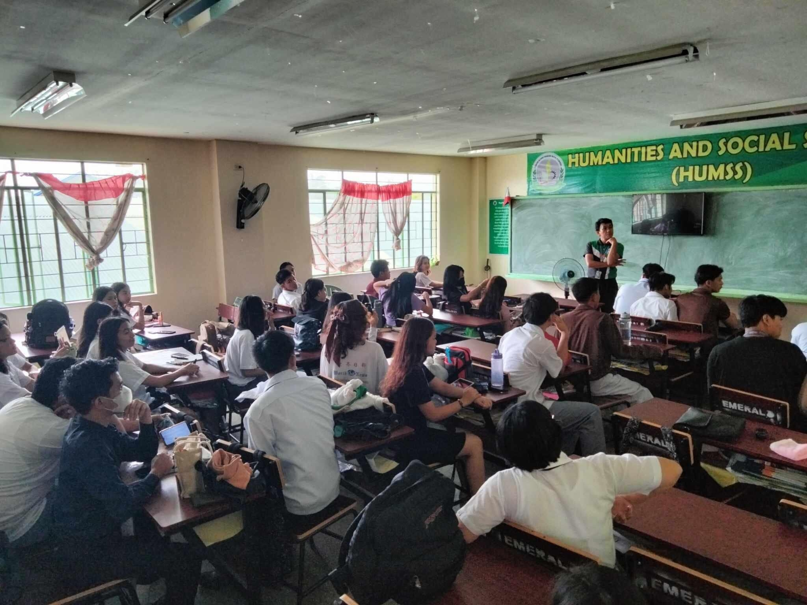

The HUMSS strand is for students passionate about exploring human interactions, cultures, and societies. Perfect for future teachers, writers, lawyers, or psychologists.

Subjects: Creative Writing, Social Studies, Philosophy
Career Pathways: Teaching, Law, Public Administration